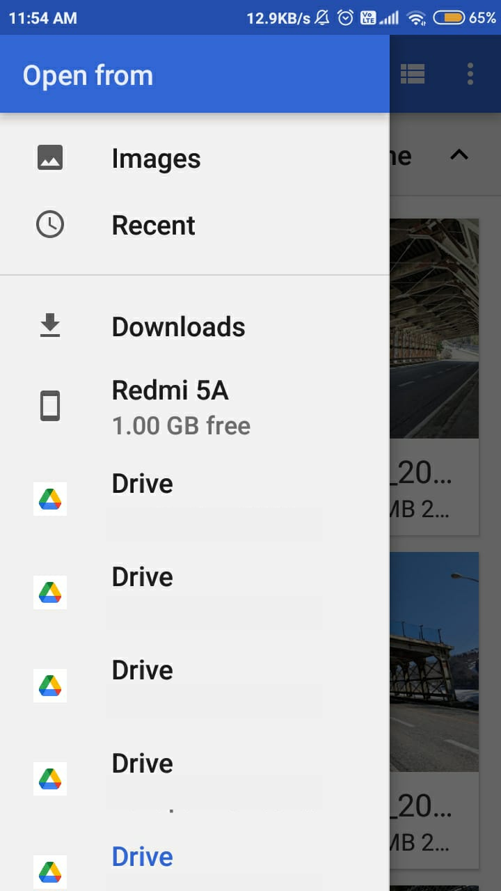
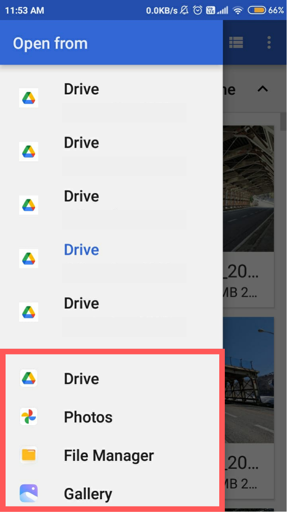
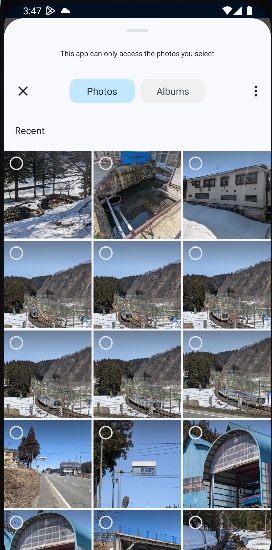

When a label, caption or description is not available in your language, the app falls back to another language. We consider it is better than showing nothing. For instance, a person whose phone is in Hindi might be happy to see English descriptions of items for which a Hindi description is not available.
Of course, you are more than welcome to contribute labels and descriptions in your language. To do so, please tap the Wikidata barcode icon in Nearby, or "View file page", or "View item page". This will open the website where translations can be contributed. Thanks a lot!
Pictures with geolocation data are much more valuable, so please enable geotagging in your camera app. Here is how to do on Pixel phones: tap on the settings button at the bottom-left of the camera main screen, tap "More settings", enable "Save location". In other camera apps it may be labelled Location (tags) or GPS (tags).
If your phone's GPS is slow to start, before taking pictures considering launching the free GPS Locker app. It will prevent the GPS from going to sleep. Please be aware that it consumes battery power, though.
If the Commons app tells you that pictures do not have location, even though you took them after enabling location, follow these steps:
In the Commons Android app's settings, enable "Use document based photo picker".
Install an EXIF viewer app and check whether the pictures actually have location or not. Some galleries also can show a map if location is present, for instance on the Google Photos app this is achieved by swiping up. If there is no location, try a different camera app.
If that does not fix the issue, try uninstalling and reinstalling the Commons Android app.
If that still does not fix the issue, try resetting cache and storage of both your camera app and your gallery app. Do not forget to turn on "save location" on the camera app.
Pictures you upload may lead to your identity. Let's say you live under a dictatorship and take a picture revealing leaders corruption: you want to upload the picture to Commons but you probably do not want to be identified as the photographer or as the uploader. Below are a few steps you can take to reduce the risks of being identified, but remember that zero risk does not exist.
Use a VPN.
Remove the EXIF from your picture. Only a few persons on Earth use the same camera model, same firmware version, same settings as you, and all of this information is available in the EXIF, making it easy to link from this picture to your other pictures. The application Scrambled Exif (F-Droid , Google Play ) makes the process easy.
Create a throwaway Wikimedia account without an email address, and only use it for that picture or set of pictures. Then afterwards avoid modifying these pictures with your usual account.
Even lens/camera imperfections might theoretically allow a very motivated organization to match your pictures.
Most editors degrade picture quality, making pictures less accurate and bigger in file size. If you need to edit a picture before upload, please try to only use lossless JPEG editors.
JPEG Cropper allows lossless rotation, lossless cropping, and even lets you blur parts of a picture without recompressing the surrounding areas.
Between taking a picture and uploading it, please do not apply color filters, flip horizontally/vertically, add stickers/text, nor apply any restoration/AI/upscaling. Such operations lose original data. If you really want to apply such transformations, please upload the original first, then upload the transformed picture as a new version using the desktop website.
Nearby is a fantastic way to find interesting places. But imagine that you go to the place pinned on the map, and it is not at all what was expected? In such cases, fixing the problem is very important, and you can do it easily! It will benefit not only Commons but also all other Wikimedia projects and in particular Wikipedia. Here is how to proceed:
Scenario: Yes there used to be a castle here, but now there is absolutely nothing left, maybe it is just green fields or a factory or recent houses. There is not even a plaque indicating that there used to be a castle.
How to fix it: With the place selected, tap the bottom bar that shows the place name. In the toolbar that appears, tap the Wikidata icon (which looks like a barcode). As the mobile Wikidata website does not allow statements edition, either open that page on a desktop web browser (via the "Share" button) or go to the three-dots menu and open the page in your web browser app, enable Desktop mode, and remove the "m." part from the URL. On the Wikidata item page, click on "Add statement", type "ended" and select the "dissolved, demolished or abolished date" property that appears. In the field that appears besides, enter the date at which the item disappeared, or if you don't know when that happened just set it to "unknown value" by clicking the small icon that looks like 3 stacked rectangles at the left of the field. Finally, press "publish".
Scenario: The pin shows the "Bodleian Library" here, but actually you know this library it is at a different place, maybe 10 meters across the street or even a few kilometers away. Make sure your GPS is correct, and double-check locations.
How to fix it: With the place selected, tap the bottom bar that shows the place name. In the toolbar that appears, tap the Wikidata icon (which looks like a barcode). As the mobile Wikidata website does not allow statements edition, either open that page on a desktop web browser (via the "Share" button) or go to the three-dots menu and open the page in your web browser app, enable Desktop mode, and remove the "m." part from the URL. On the Wikidata item's page, find the "coordinate location" statement, click its "edit" button, and click on what looks like a grey point surrounded by two white triangles, at the left. It will popup the rank selector, select "Deprecated rank". Then click "add value" and enter the right location (most latitude/longitude formats are accepted), and click the "publish" button. Finally, go to the talk page and explain why you think this is the real location. Erroneous data often comes from external databases, deprecating rather than replacing gives these databases valuable feedback and prevents the erroneous data from being imported again into Wikidata.
You can customize the Nearby query to show things that interest you, show labels in your preferred languages, etc. The Nearby query is written in SPARQL, which is very powerful but also hard to debug. We suggest you start from the default query and modify things little by little. The good news is that you can always go back to the default: just reset and apply. You can copy/paste various queries as text files or email drafts and paste the one you want to use when the need arises.
The names of the outputs can not be changed.
Variable names are replaced by the app before executing the query.
The Commons app lets you pick what picture(s) you want to upload, using either the camera button or what we call a "picker". The "custom picker" has an icon that includes a small Commons logo, because it has Commons-specific features such as checking whether a picture exists on the Commons server or not. The "normal picker" now has two variants: the "classic picker" and the "GET_CONTENT picker" (you may choose your favourite variant from Settings). To sum up, the app now has 3 pickers:
The custom picker that you may use in the Contributions tab:
Custom Picker
The classic picker that you may use in the Contributions and Nearby tabs:

Classic Picker
The GET_CONTENT picker that you may try in the Contributions and Nearby tab, it varies from device to device:

GET_CONTENT picker without takeover

GET_CONTENT picker with takeover
How is the new GET_CONTENT picker different from the classic picker?
Android recently introduced a new photo picker for devices having Android 11 or higher. Unfortunately, this photo picker removes location tags from the EXIF metadata of images. The new photo picker takes over GET_CONTENT on some devices. This means you will see the new photo picker and your pictures might lose location information in the EXIF metadata.
In order to preserve location information, we decided to go with the system file picker by default for the classic picker and disabled the GET_CONTENT picker.
To summarize the advantages and disadvantages:
GET_CONTENT Picker:
Merits: Lists all image providers as marked in red in the figure above, user-friendly interface.
Demerit: Removes location tags from EXIF metadata on some devices.
Classic Picker:
Merit: Preserves location tags on all devices.
Demerit: Only allows selection from within the app and Google Drive, no third-party image providers displayed.
You may like to use the classic picker when:
You want to share the location information present in the EXIF metadata of the images
You choose images from within the file picker and do not use any other Gallery app providers
You may like to use the GET_CONTENT picker when:
You love sharing images from third-party Gallery apps and other such providers and prefer the existing UI
You are using a device in which the new photo picker does not take over GET_CONTENT
You do not wish to share the location information in the EXIF metadata in case GET_CONTENT takeover is enabled on your device.
Can we enjoy the GET_CONTENT picker without takeover?
Absolutely yes! You can easily disable the GET_CONTENT takeover on your device by running a simple command. This will enable the app to display all image providers, allowing you to use them within the app.
To run the adb command, follow these steps:
Enable developer options and USB debugging on your phone.
Connect your phone to your computer using a USB cable.
Open the terminal on your computer.
To ensure that your phone is connected to the adb server, run the following command:
adb devices -l
Once you have confirmed the connection, execute the following command to disable the takeover:
adb shell cmd device_config put storage_native_boot take_over_get_content false
Now you can easily access all the image providers without losing picture locations by using the GET_CONTENT picker!